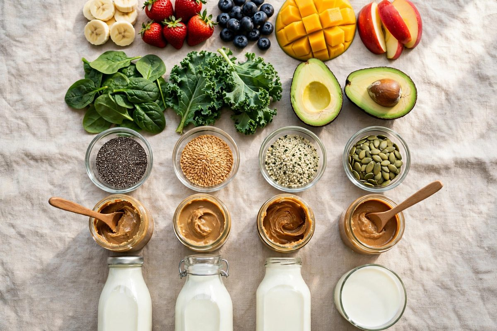

Home » Guides
Smoothie Ingredients Guide

A good smoothie is built from a few simple groups of ingredients: a liquid base, fruit for flavour, something green or vegetable for nutrients, a protein source for staying power, and an extra for flavour or texture. Knowing what each group does makes it easy to build your own recipes instead of following one every time. This guide explains each group, gives the best choices in each, and shows how to combine them into a balanced smoothie.
Liquid bases
The liquid controls the thickness and the flavour. Milk adds protein and creaminess, and it is the best choice for a filling smoothie. Plant milks like oat, almond, and soy milk are good alternatives; oat milk is creamy, almond milk is light, and soy milk is high in protein. Water is the lightest choice and works well for fruit and green smoothies. Coconut water adds a mild sweetness and helps hydration. Fruit juice adds sugar without fibre, so use it sparingly or not at all. Start with about 200 millilitres of liquid and add more only if the smoothie is too thick.
Fruits
Banana is the most useful smoothie fruit: it is sweet, creamy, and thickens the drink. Berries are low in sugar and high in fibre. Mango and pineapple add tropical sweetness. Apple and pear add freshness. Frozen fruit is usually better than fresh for smoothies, because it makes the drink thick and cold. Use one to two servings of fruit per smoothie, about one to two cups in total. Mix a sweet fruit like banana with a tart fruit like berries for the best flavour balance.
Greens and vegetables
Spinach is the best green for beginners because it is mild and blends smoothly. Kale is more nutritious but stronger tasting. Cucumber adds water and freshness with almost no flavour. Carrots add sweetness and colour. Cauliflower, steamed and frozen, adds thickness without changing the flavour. A large handful of greens per smoothie is a good amount. Rotate your greens through the week for a wider range of nutrients, and wash them well before blending.
Protein and extras
Protein makes a smoothie filling. Greek yoghurt, milk, cottage cheese, tofu, and protein powder are the best sources. Healthy fats from nut butter, avocado, or seeds add staying power, but use them in small amounts because they are high in calories. Oats and chia seeds add fibre. Flavour extras include cocoa powder, vanilla extract, cinnamon, ginger, and mint. Keep extras to one or two per smoothie, so the flavour stays clear and the calories stay under control.
Building your own recipe
Once you know the ingredient groups, you can build your own smoothie without a recipe. Start with a liquid, add one or two fruits, add a handful of greens if you like, add a protein source, and finish with one extra for flavour. Write down combinations you enjoy, and change one ingredient at a time to create new versions. A notebook or a note on your phone is enough to keep track. Within a few weeks, you will have a personal list of recipes that suit your taste, your budget, and your blender. Building your own recipes is more satisfying than following one, and it makes smoothies a lasting habit.
Frequently Asked Questions
What is the best liquid for a smoothie?
Milk is best for a filling smoothie, water is best for a light one, and coconut water is a good middle ground. Avoid fruit juice, which adds sugar.
How many ingredients should a smoothie have?
Three to five is ideal. More than that makes the flavour muddy and the calories hard to control.
Can I use frozen fruit instead of fresh?
Yes, and it is often better. Frozen fruit makes the smoothie thick and cold, and it is cheaper out of season.